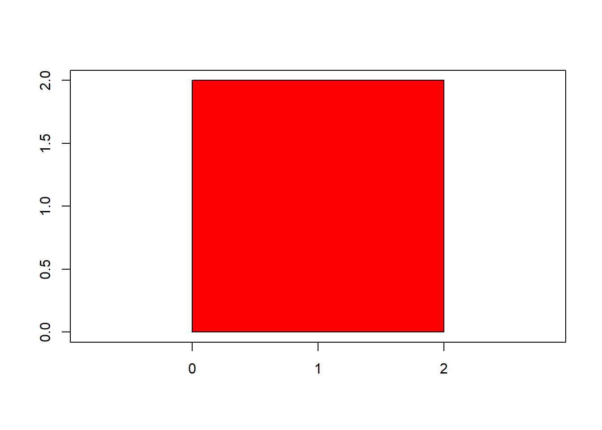
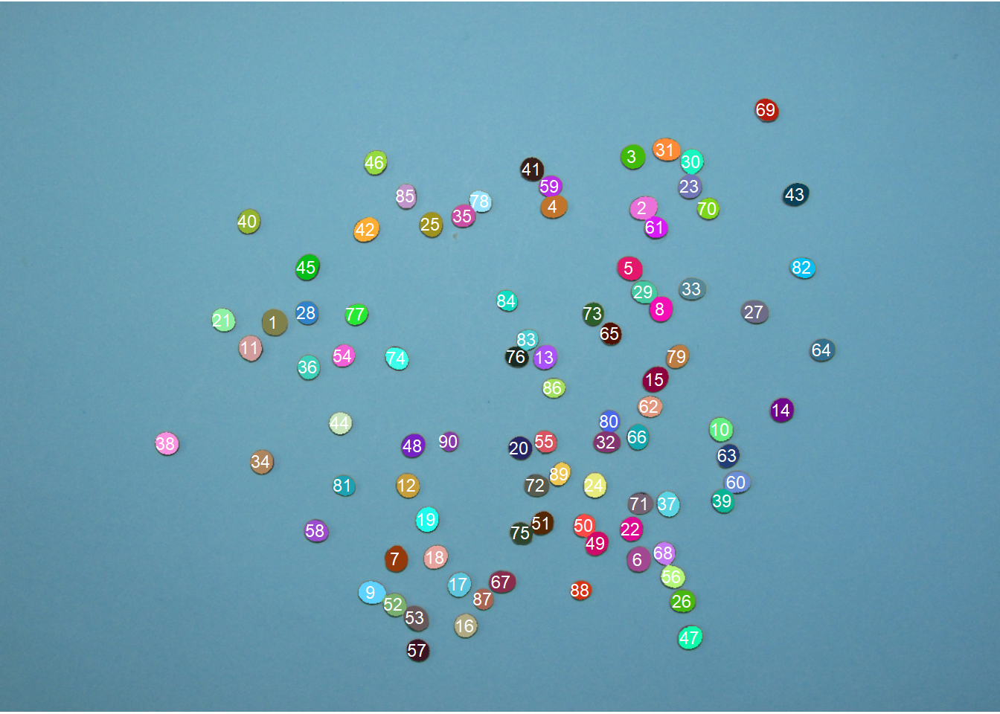
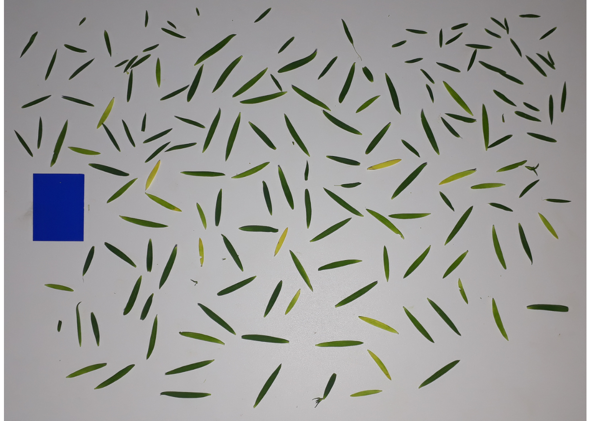
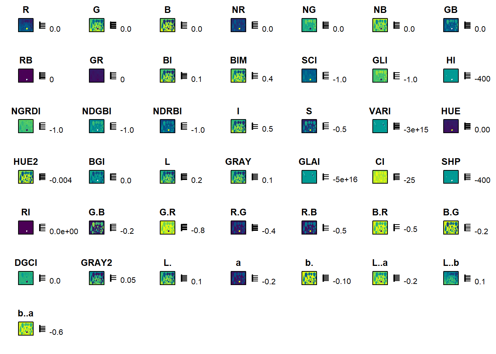
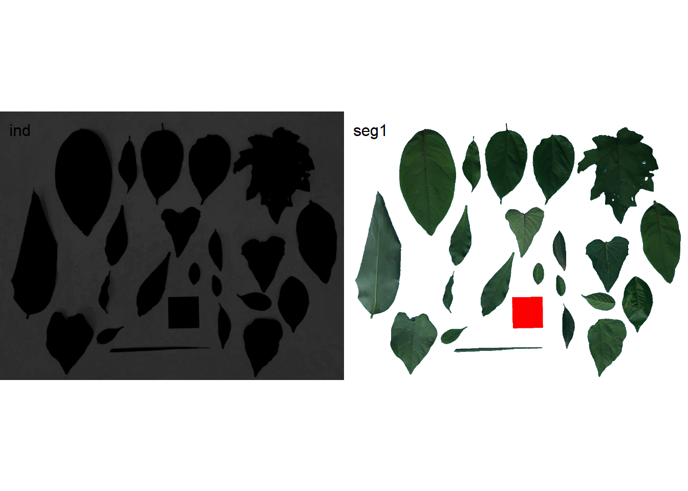
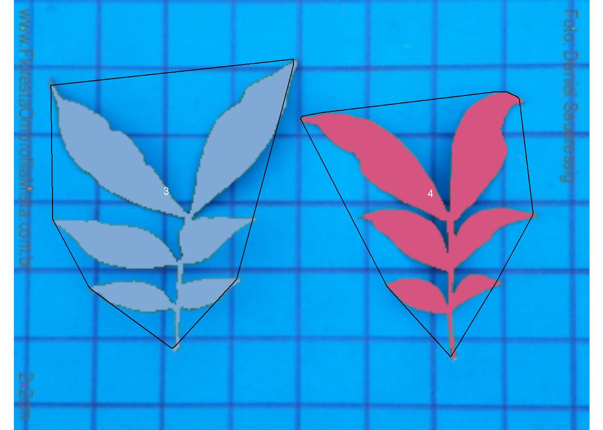

setwd("E:/Desktop/UFSC/cursos/pliman_tut/imgs")Analyze objects
1 Directory
2 Working with polygons
A ‘polygon’ is a plane figure that is described by a finite number of straight line segments connected to form a closed polygonal chain (Singer, 1993)1.
We can then conclude that image objects can be expressed as polygons with n vertices. pliman has a set of functions(draw_*()) useful for drawing common shapes like circles, squares, triangles, rectangles and n- tagons . Another group of poly_*() functions can be used to analyze polygons. Let’s start with a simple example related to the area and perimeter of a square.
The legacy packages maptools, rgdal, and rgeos, underpinning the sp package,
which was just loaded, will retire in October 2023.
Please refer to R-spatial evolution reports for details, especially
https://r-spatial.org/r/2023/05/15/evolution4.html.
It may be desirable to make the sf package available;
package maintainers should consider adding sf to Suggests:.
The sp package is now running under evolution status 2
(status 2 uses the sf package in place of rgdal)|==========================================================|| Tools for Plant Image Analysis (pliman 2.0.0) || Author: Tiago Olivoto || Type 'citation('pliman')' to know how to cite pliman || Type 'vignette('pliman_start')' for a short tutorial || Visit 'http://bit.ly/pkg_pliman' for a complete tutorial ||==========================================================|square <- draw_square(side = 2)
poly_area(square)[1] 4poly_perimeter(square)[1] 6Now, let’s see what happens when we start with a hexagon and increase the number of sides up to 1000.
shapes <-
list(side6 = draw_n_tagon(6, plot = FALSE),
side12 = draw_n_tagon(8, plot = FALSE),
side24 = draw_n_tagon(12, plot = FALSE),
side100 = draw_n_tagon(50, plot = FALSE),
side500 = draw_n_tagon(100, plot = FALSE),
side100 = draw_n_tagon(1000, plot = FALSE))
plot_polygon(shapes, merge = FALSE, aspect_ratio = 1)poly_area(shapes)[1] 2.598076 2.828427 3.000000 3.133331 3.139526 3.141572poly_perimeter(shapes) side6 side12 side24 side100 side500 side100
5.000000 5.357568 5.694019 6.153471 6.219330 6.276892 Note that when \(n \to \infty\), the sum of the sides becomes the circumference of the circle, given by \(2 \pi r\), and the area becomes \(\pi r^2\). This is fun, but pliman is primarily designed for analyzing plant image analysis. So why use polygons? Let’s see how we can use these functions to get applicable information.
leaves <- image_import("ref_leaves.jpg", plot = TRUE)
# getting the outline of objects
cont <-
object_contour(leaves,
index = "B-R",
watershed = FALSE)# plotting the polygon
plot_polygon(cont)Nice! We can use the contours of any object to get useful information related to its shape. To reduce the amount of output, I will only use five samples: 1, 2, 12, and 23.
cont2 <- cont[c("5", "20", "27")]
plot_polygon(cont2)In the current version of pliman, you can calculate the following measurements. For more details, see Chen & Wang (2005)2, Claude (2008)3, and Montero et al. (2009)4.
2.1 Area
The area of a shape is calculated using Shoelace’s formula (Lee and Lim, 2017)5, as follows
\[ A=\frac{1}{2}\left |\sum_{i=1}^{n}\left(x_{i} y_{i+1}-x_{i+1}y_{i}\right)\right| \]
poly_area(cont) [1] 18352.5 36372.0 37283.0 16610.5 5077.0 30713.5 19633.0 6659.0 9035.0
[10] 3083.5 12284.5 8285.0 1518.5 1878.0 1271.5 9692.0 3306.5 8433.5
[19] 2952.0 16263.0 12589.0 1865.5 1726.02.2 Perimeter
The perimeter is calculated as the sum of the Euclidean distance between all points on a shape. Distances can be obtained with poly_distpts().
poly_perimeter(cont) 1 2 3 4 5 6 7 10
615.2569 1125.0874 797.8082 552.3574 386.2914 897.2102 604.4701 412.7056
11 14 15 16 17 18 19 20
453.4163 284.3797 502.7716 469.5584 160.4386 285.4508 156.2965 412.1026
21 22 23 24 25 26 27
256.8650 365.7279 301.3087 538.4701 479.2742 211.8944 548.2548 # perimeter of a circle with radius 2
circle <- draw_circle(radius = 2, plot = FALSE)
poly_perimeter(circle)[1] 12.56635# check the result
2*pi*2[1] 12.566372.3 Radius
The radius of a pixel on the object’s contour is calculated as its distance from the object’s centroid(also called ‘center of mass’). These distances can be obtained with poly_centdist().
dist <- poly_centdist(cont)
# stats for radius
mean_list(dist) 1 2 3 4 5 6 7 10
81.50472 107.15072 111.67757 75.92128 48.48228 112.97916 82.68263 53.51156
11 14 15 16 17 18 19 20
56.72946 36.54740 64.67529 61.75205 22.48669 33.83886 21.25721 57.39115
21 22 23 24 25 26 27
34.56566 52.56715 38.06452 73.40734 65.81308 28.06548 67.26094 min_list(dist) 1 2 3 4 5 6 7 10
56.365931 62.460726 79.800528 55.452805 21.232635 48.004837 53.638969 25.979106
11 14 15 16 17 18 19 20
34.823777 15.440760 43.867424 29.407891 15.553085 5.815242 11.841794 42.995237
21 22 23 24 25 26 27
23.217347 44.807718 13.925495 59.848727 47.836671 16.415385 3.438458 max_list(dist) 1 2 3 4 5 6 7 10
126.82821 152.42898 166.37215 115.03892 84.48600 192.29568 127.78141 91.08601
11 14 15 16 17 18 19 20
88.38574 62.81868 95.99267 106.86452 33.31437 62.59528 33.27942 85.25620
21 22 23 24 25 26 27
54.26327 64.41345 67.61794 104.72813 98.71630 47.72001 134.03105 sd_list(dist) 1 2 3 4 5 6 7 10
17.425062 18.421426 24.407052 14.837653 18.090150 41.426392 21.177024 19.809781
11 14 15 16 17 18 19 20
13.522420 13.821949 12.949648 23.157277 5.360341 15.964780 6.161850 12.086296
21 22 23 24 25 26 27
8.886554 5.709767 15.304076 9.980561 12.689383 8.956172 38.480834 # average radius of above circle
poly_centdist(circle) |> mean_list()[1] 1.9999982.4 Length and width
The length and width of an object are calculated with poly_lw(), as the difference between the maximum and minimum of the x and y coordinates after the object has been aligned with poly_align().
poly_lw(cont) length width
[1,] 238.54100 125.05197
[2,] 280.55220 237.69204
[3,] 315.47889 166.64659
[4,] 209.33606 123.39163
[5,] 168.01252 54.02002
[6,] 375.58661 131.13737
[7,] 249.45384 116.64014
[8,] 179.84217 62.94321
[9,] 152.34622 114.49558
[10,] 124.87025 39.06435
[11,] 166.54470 126.32871
[12,] 208.31970 68.91857
[13,] 66.15298 32.52419
[14,] 123.16969 30.24387
[15,] 66.09709 28.40237
[16,] 164.06833 90.09544
[17,] 102.73052 50.34951
[18,] 100.45299 98.53530
[19,] 133.47743 37.65555
[20,] 180.69778 135.88876
[21,] 176.71212 111.21299
[22,] 89.00219 36.02323
[23,] 266.25888 10.456542.5 Circularity, eccentricity, diameter, and elongation
Circularity(Montero et al. 2009)6 is also called shape compactness, or measure of roundness of an object. It is given by \(C = P^2 / A\), where \(P\) is the perimeter and \(A\) is the area of the object.
poly_circularity(cont) 1 2 3 4 5 6 7 10
20.62613 34.80209 17.07207 18.36782 29.39158 26.20952 18.61071 25.57831
11 14 15 16 17 18 19 20
22.75444 26.22728 20.57710 26.61257 16.95130 43.38773 19.21241 17.52255
21 22 23 24 25 26 27
19.95452 15.86019 30.75437 17.82882 18.24638 24.06822 174.15027 As the above measurement depends on the scale, normalized roundness can be used. In this case, a perfect circle is assumed to have a circularity equal to 1. This measure is invariant under translation, rotation and scale transformations, given \(Cn = P^2 / 4 \pi A\)
poly_circularity_norm(cont) 1 2 3 4 5 6 7 10
0.6092451 0.3610809 0.7360778 0.6841513 0.4275500 0.4794582 0.6752224 0.4912902
11 14 15 16 17 18 19 20
0.5522602 0.4791335 0.6106970 0.4721968 0.7413221 0.2896296 0.6540756 0.7171542
21 22 23 24 25 26 27
0.6297505 0.7923216 0.4086044 0.7048347 0.6887047 0.5221148 0.0721582 # normalized circularity for different shapes
draw_square(plot =FALSE) |> poly_circularity_norm()[1] 1.396263draw_circle(plot=FALSE) |> poly_circularity_norm()[1] 0.9999967poly_circularity_haralick() calculates the Circularity of Haralick, CH (Haralick, 1974)7. The method is based on calculating all Euclidean distances from the object’s centroid to each contour pixel. With this set of distances, the mean(\(m\)) and the standard deviation(\(s\)) are calculated. These statistical parameters are used in a ratio that calculates CH as $CH = m/ sd $.
1 2 3 4 5 6 7 10
4.677442 5.816635 4.575627 5.116798 2.680038 2.727227 3.904355 2.701270
11 14 15 16 17 18 19 20
4.195215 2.644156 4.994367 2.666637 4.195010 2.119594 3.449810 4.748449
21 22 23 24 25 26 27
3.889658 9.206531 2.487214 7.355031 5.186468 3.133647 1.747908 poly_convexity() Calculates the convexity of a shape using a ratio of the perimeter of the convex hull to the perimeter of the polygon.
poly_convexity(cont) 1 2 3 4 5 6 7 10
0.8967601 0.6876980 0.9192591 0.9132441 0.8298061 0.8645018 0.8757106 0.9226473
11 14 15 16 17 18 19 20
0.8410503 0.9023328 0.8468413 0.9133223 0.9154601 0.6425806 0.9193294 0.9192070
21 22 23 24 25 26 27
0.8967441 0.8459495 0.9009212 0.9076033 0.8508448 0.7493671 0.7361697 poly_eccentricity() Calculates the eccentricity of a shape using the ratio of the eigenvalues(coordinate inertia axes).
poly_eccentricity(cont) [,1]
[1,] 0.346560699
[2,] 0.844858938
[3,] 0.401595451
[4,] 0.431419527
[5,] 0.132562754
[6,] 0.156699400
[7,] 0.322626716
[8,] 0.149181272
[9,] 0.543013592
[10,] 0.142622157
[11,] 0.608127299
[12,] 0.127298521
[13,] 0.379315768
[14,] 0.069374529
[15,] 0.275223477
[16,] 0.414141956
[17,] 0.313023030
[18,] 0.960354914
[19,] 0.109866568
[20,] 0.648373662
[21,] 0.456904377
[22,] 0.190833679
[23,] 0.002065428poly_elongation() Calculates the elongation of an object as 1 - width / length
poly_elongation(cont) [,1]
[1,] 0.47576322
[2,] 0.15277071
[3,] 0.47176628
[4,] 0.41055721
[5,] 0.67847621
[6,] 0.65084654
[7,] 0.53241794
[8,] 0.65000859
[9,] 0.24845148
[10,] 0.68716047
[11,] 0.24147263
[12,] 0.66916922
[13,] 0.50834888
[14,] 0.75445361
[15,] 0.57029316
[16,] 0.45086636
[17,] 0.50988754
[18,] 0.01909042
[19,] 0.71788823
[20,] 0.24797772
[21,] 0.37065445
[22,] 0.59525454
[23,] 0.96072791poly_caliper() Calculates the gauge(also called Feret’s diameter).
poly_caliper(cont) 1 2 3 4 5 6 7 10
235.68835 284.39585 314.63630 205.34118 160.11246 372.48490 249.28097 179.69418
11 14 15 16 17 18 19 20
154.98387 124.78782 167.69317 207.57649 66.18912 123.32883 66.09841 164.24677
21 22 23 24 25 26 27
102.78619 128.03515 133.37541 185.60711 177.11578 89.04493 266.18790 Users can use the poly_measures() function to calculate most object measurements in a single call.
measures <- poly_measures(cont) |> round_cols()
t(measures) 1 2 3 4 5 6
id 1.00 2.00 3.00 4.00 5.00 6.00
x 473.08 809.08 244.59 612.07 375.16 104.34
y 144.40 168.44 194.72 152.34 155.65 440.98
area 18352.50 36372.00 37283.00 16610.50 5077.00 30713.50
area_ch 19538.50 45891.00 37696.50 17423.00 5670.50 32710.50
perimeter 615.26 1125.09 797.81 552.36 386.29 897.21
radius_mean 81.50 107.15 111.68 75.92 48.48 112.98
radius_min 56.37 62.46 79.80 55.45 21.23 48.00
radius_max 126.83 152.43 166.37 115.04 84.49 192.30
radius_sd 17.43 18.42 24.41 14.84 18.09 41.43
radius_ratio 2.25 2.44 2.08 2.07 3.98 4.01
diam_mean 163.01 214.30 223.36 151.84 96.96 225.96
diam_min 112.73 124.92 159.60 110.91 42.47 96.01
diam_max 253.66 304.86 332.74 230.08 168.97 384.59
caliper 238.54 280.55 315.48 209.34 168.01 375.59
length 238.54 280.55 315.48 209.34 168.01 375.59
width 125.05 237.69 166.65 123.39 54.02 131.14
solidity 0.94 0.79 0.99 0.95 0.90 0.94
convexity 0.90 0.69 0.92 0.91 0.83 0.86
elongation 0.48 0.15 0.47 0.41 0.68 0.65
circularity 20.63 34.80 17.07 18.37 29.39 26.21
circularity_haralick 4.68 5.82 4.58 5.12 2.68 2.73
circularity_norm 0.61 0.36 0.74 0.68 0.43 0.48
eccentricity 0.35 0.84 0.40 0.43 0.13 0.16
pcv 1.26 2.84 0.43 0.94 1.64 0.82
7 10 11 14 15 16 17
id 7.00 8.00 9.00 10.00 11.00 12.00 13.00
x 929.08 341.49 529.46 632.11 773.02 446.42 568.82
y 375.55 375.53 335.35 405.31 430.98 518.10 474.33
area 19633.00 6659.00 9035.00 3083.50 12284.50 8285.00 1518.50
area_ch 20110.50 7117.00 10330.00 3218.50 13343.50 8811.00 1553.00
perimeter 604.47 412.71 453.42 284.38 502.77 469.56 160.44
radius_mean 82.68 53.51 56.73 36.55 64.68 61.75 22.49
radius_min 53.64 25.98 34.82 15.44 43.87 29.41 15.55
radius_max 127.78 91.09 88.39 62.82 95.99 106.86 33.31
radius_sd 21.18 19.81 13.52 13.82 12.95 23.16 5.36
radius_ratio 2.38 3.51 2.54 4.07 2.19 3.63 2.14
diam_mean 165.37 107.02 113.46 73.09 129.35 123.50 44.97
diam_min 107.28 51.96 69.65 30.88 87.73 58.82 31.11
diam_max 255.56 182.17 176.77 125.64 191.99 213.73 66.63
caliper 249.45 179.84 152.35 124.87 166.54 208.32 66.15
length 249.45 179.84 152.35 124.87 166.54 208.32 66.15
width 116.64 62.94 114.50 39.06 126.33 68.92 32.52
solidity 0.98 0.94 0.87 0.96 0.92 0.94 0.98
convexity 0.88 0.92 0.84 0.90 0.85 0.91 0.92
elongation 0.53 0.65 0.25 0.69 0.24 0.67 0.51
circularity 18.61 25.58 22.75 26.23 20.58 26.61 16.95
circularity_haralick 3.90 2.70 4.20 2.64 4.99 2.67 4.20
circularity_norm 0.68 0.49 0.55 0.48 0.61 0.47 0.74
eccentricity 0.32 0.15 0.54 0.14 0.61 0.13 0.38
pcv 0.85 1.15 1.53 1.75 1.36 1.07 3.13
18 19 20 21 22 23 24
id 14.00 15.00 16.00 17.00 18.00 19.00 20.00
x 305.39 633.31 858.65 751.61 536.84 654.67 199.12
y 534.70 510.59 557.43 555.64 588.83 630.47 665.41
area 1878.00 1271.50 9692.00 3306.50 8433.50 2952.00 16263.00
area_ch 2332.00 1315.00 9969.00 3531.50 8529.50 3202.00 17237.00
perimeter 285.45 156.30 412.10 256.87 365.73 301.31 538.47
radius_mean 33.84 21.26 57.39 34.57 52.57 38.06 73.41
radius_min 5.82 11.84 43.00 23.22 44.81 13.93 59.85
radius_max 62.60 33.28 85.26 54.26 64.41 67.62 104.73
radius_sd 15.96 6.16 12.09 8.89 5.71 15.30 9.98
radius_ratio 10.76 2.81 1.98 2.34 1.44 4.86 1.75
diam_mean 67.68 42.51 114.78 69.13 105.13 76.13 146.81
diam_min 11.63 23.68 85.99 46.43 89.62 27.85 119.70
diam_max 125.19 66.56 170.51 108.53 128.83 135.24 209.46
caliper 123.17 66.10 164.07 102.73 100.45 133.48 180.70
length 123.17 66.10 164.07 102.73 100.45 133.48 180.70
width 30.24 28.40 90.10 50.35 98.54 37.66 135.89
solidity 0.81 0.97 0.97 0.94 0.99 0.92 0.94
convexity 0.64 0.92 0.92 0.90 0.85 0.90 0.91
elongation 0.75 0.57 0.45 0.51 0.02 0.72 0.25
circularity 43.39 19.21 17.52 19.95 15.86 30.75 17.83
circularity_haralick 2.12 3.45 4.75 3.89 9.21 2.49 7.36
circularity_norm 0.29 0.65 0.72 0.63 0.79 0.41 0.70
eccentricity 0.07 0.28 0.41 0.31 0.96 0.11 0.65
pcv 2.24 3.12 1.12 1.99 1.10 1.71 1.20
25 26 27
id 21.00 22.00 23.00
x 767.38 313.05 428.12
y 675.03 656.60 696.30
area 12589.00 1865.50 1726.00
area_ch 13171.50 2076.00 2079.00
perimeter 479.27 211.89 548.25
radius_mean 65.81 28.07 67.26
radius_min 47.84 16.42 3.44
radius_max 98.72 47.72 134.03
radius_sd 12.69 8.96 38.48
radius_ratio 2.06 2.91 38.98
diam_mean 131.63 56.13 134.52
diam_min 95.67 32.83 6.88
diam_max 197.43 95.44 268.06
caliper 176.71 89.00 266.26
length 176.71 89.00 266.26
width 111.21 36.02 10.46
solidity 0.96 0.90 0.83
convexity 0.85 0.75 0.74
elongation 0.37 0.60 0.96
circularity 18.25 24.07 174.15
circularity_haralick 5.19 3.13 1.75
circularity_norm 0.69 0.52 0.07
eccentricity 0.46 0.19 0.00
pcv 1.03 2.45 0.68If the image resolution is known, the measurements can be corrected with get_measures(). Image resolution can be obtained using a known distance in the image. In the example, the white square has a side of 5 cm. So using dpi() the resolution can be obtained. In this case, the dpi is ~50.
color_measures <- get_measures(measures, dpi = 50)
t(color_measures) 1 2 3 4 5
id 1.00000 2.00000 3.00000 4.00000 5.00000
x 473.08000 809.08000 244.59000 612.07000 375.16000
y 144.40000 168.44000 194.72000 152.34000 155.65000
area 47.36120 93.86304 96.21400 42.86572 13.10191
area_ch 50.42183 118.42815 97.28110 44.96249 14.63352
perimeter 31.25521 57.15457 40.52875 28.05989 19.62353
radius_mean 4.14020 5.44322 5.67334 3.85674 2.46278
radius_min 2.86360 3.17297 4.05384 2.81686 1.07848
radius_max 6.44296 7.74344 8.45160 5.84403 4.29209
radius_sd 0.88544 0.93574 1.24003 0.75387 0.91897
radius_ratio 0.11430 0.12395 0.10566 0.10516 0.20218
diam_mean 8.28091 10.88644 11.34669 7.71347 4.92557
diam_min 5.72668 6.34594 8.10768 5.63423 2.15748
diam_max 12.88593 15.48689 16.90319 11.68806 8.58368
caliper 12.11783 14.25194 16.02638 10.63447 8.53491
length 12.11783 14.25194 16.02638 10.63447 8.53491
width 6.35254 12.07465 8.46582 6.26821 2.74422
solidity 0.04775 0.04013 0.05029 0.04826 0.04572
convexity 0.90000 0.69000 0.92000 0.91000 0.83000
elongation 0.48000 0.15000 0.47000 0.41000 0.68000
circularity 20.63000 34.80000 17.07000 18.37000 29.39000
circularity_haralick 4.68000 5.82000 4.58000 5.12000 2.68000
circularity_norm 0.61000 0.36000 0.74000 0.68000 0.43000
eccentricity 0.35000 0.84000 0.40000 0.43000 0.13000
pcv 1.26000 2.84000 0.43000 0.94000 1.64000
pcv 1.26000 2.84000 0.43000 0.94000 1.64000
6 7 10 11 14
id 6.00000 7.00000 8.00000 9.00000 10.00000
x 104.34000 929.08000 341.49000 529.46000 632.11000
y 440.98000 375.55000 375.53000 335.35000 405.31000
area 79.26049 50.66571 17.18448 23.31608 7.95740
area_ch 84.41402 51.89796 18.36641 26.65801 8.30579
perimeter 45.57827 30.70708 20.96567 23.03374 14.44650
radius_mean 5.73938 4.20014 2.71831 2.88188 1.85674
radius_min 2.43840 2.72491 1.31978 1.76886 0.78435
radius_max 9.76884 6.49122 4.62737 4.49021 3.19126
radius_sd 2.10464 1.07594 1.00635 0.68682 0.70206
radius_ratio 0.20371 0.12090 0.17831 0.12903 0.20676
diam_mean 11.47877 8.40080 5.43662 5.76377 3.71297
diam_min 4.87731 5.44982 2.63957 3.53822 1.56870
diam_max 19.53717 12.98245 9.25424 8.97992 6.38251
caliper 19.07997 12.67206 9.13587 7.73938 6.34340
length 19.07997 12.67206 9.13587 7.73938 6.34340
width 6.66191 5.92531 3.19735 5.81660 1.98425
solidity 0.04775 0.04978 0.04775 0.04420 0.04877
convexity 0.86000 0.88000 0.92000 0.84000 0.90000
elongation 0.65000 0.53000 0.65000 0.25000 0.69000
circularity 26.21000 18.61000 25.58000 22.75000 26.23000
circularity_haralick 2.73000 3.90000 2.70000 4.20000 2.64000
circularity_norm 0.48000 0.68000 0.49000 0.55000 0.48000
eccentricity 0.16000 0.32000 0.15000 0.54000 0.14000
pcv 0.82000 0.85000 1.15000 1.53000 1.75000
pcv 0.82000 0.85000 1.15000 1.53000 1.75000
15 16 17 18 19
id 11.00000 12.00000 13.00000 14.00000 15.00000
x 773.02000 446.42000 568.82000 305.39000 633.31000
y 430.98000 518.10000 474.33000 534.70000 510.59000
area 31.70187 21.38060 3.91870 4.84644 3.28128
area_ch 34.43477 22.73802 4.00773 6.01805 3.39354
perimeter 25.54072 23.85365 8.15035 14.50086 7.94004
radius_mean 3.28574 3.13690 1.14249 1.71907 1.08001
radius_min 2.22860 1.49403 0.78994 0.29566 0.60147
radius_max 4.87629 5.42849 1.69215 3.18008 1.69062
radius_sd 0.65786 1.17653 0.27229 0.81077 0.31293
radius_ratio 0.11125 0.18440 0.10871 0.54661 0.14275
diam_mean 6.57098 6.27380 2.28448 3.43814 2.15951
diam_min 4.45668 2.98806 1.58039 0.59080 1.20294
diam_max 9.75309 10.85748 3.38480 6.35965 3.38125
caliper 8.46023 10.58266 3.36042 6.25704 3.35788
length 8.46023 10.58266 3.36042 6.25704 3.35788
width 6.41756 3.50114 1.65202 1.53619 1.44272
solidity 0.04674 0.04775 0.04978 0.04115 0.04928
convexity 0.85000 0.91000 0.92000 0.64000 0.92000
elongation 0.24000 0.67000 0.51000 0.75000 0.57000
circularity 20.58000 26.61000 16.95000 43.39000 19.21000
circularity_haralick 4.99000 2.67000 4.20000 2.12000 3.45000
circularity_norm 0.61000 0.47000 0.74000 0.29000 0.65000
eccentricity 0.61000 0.13000 0.38000 0.07000 0.28000
pcv 1.36000 1.07000 3.13000 2.24000 3.12000
pcv 1.36000 1.07000 3.13000 2.24000 3.12000
20 21 22 23 24
id 16.00000 17.00000 18.00000 19.00000 20.00000
x 858.65000 751.61000 536.84000 654.67000 199.12000
y 557.43000 555.64000 588.83000 630.47000 665.41000
area 25.01156 8.53289 21.76383 7.61805 41.96895
area_ch 25.72640 9.11353 22.01157 8.26321 44.48249
perimeter 20.93468 13.04900 18.57908 15.30655 27.35428
radius_mean 2.91541 1.75616 2.67056 1.93345 3.72923
radius_min 2.18440 1.17958 2.27635 0.70764 3.04038
radius_max 4.33121 2.75641 3.27203 3.43510 5.32028
radius_sd 0.61417 0.45161 0.29007 0.77724 0.50698
radius_ratio 0.10058 0.11887 0.07315 0.24689 0.08890
diam_mean 5.83082 3.51180 5.34060 3.86740 7.45795
diam_min 4.36829 2.35864 4.55270 1.41478 6.08076
diam_max 8.66191 5.51332 6.54456 6.87019 10.64057
caliper 8.33476 5.21868 5.10286 6.78078 9.17956
length 8.33476 5.21868 5.10286 6.78078 9.17956
width 4.57708 2.55778 5.00583 1.91313 6.90321
solidity 0.04928 0.04775 0.05029 0.04674 0.04775
convexity 0.92000 0.90000 0.85000 0.90000 0.91000
elongation 0.45000 0.51000 0.02000 0.72000 0.25000
circularity 17.52000 19.95000 15.86000 30.75000 17.83000
circularity_haralick 4.75000 3.89000 9.21000 2.49000 7.36000
circularity_norm 0.72000 0.63000 0.79000 0.41000 0.70000
eccentricity 0.41000 0.31000 0.96000 0.11000 0.65000
pcv 1.12000 1.99000 1.10000 1.71000 1.20000
pcv 1.12000 1.99000 1.10000 1.71000 1.20000
25 26 27
id 21.00000 22.00000 23.00000
x 767.38000 313.05000 428.12000
y 675.03000 656.60000 696.30000
area 32.48768 4.81418 4.45418
area_ch 33.99090 5.35741 5.36515
perimeter 24.34692 10.76401 27.85110
radius_mean 3.34315 1.42596 3.41681
radius_min 2.43027 0.83414 0.17475
radius_max 5.01498 2.42418 6.80872
radius_sd 0.64465 0.45517 1.95478
radius_ratio 0.10465 0.14783 1.98018
diam_mean 6.68680 2.85140 6.83362
diam_min 4.86004 1.66776 0.34950
diam_max 10.02944 4.84835 13.61745
caliper 8.97687 4.52120 13.52601
length 8.97687 4.52120 13.52601
width 5.64947 1.82982 0.53137
solidity 0.04877 0.04572 0.04216
convexity 0.85000 0.75000 0.74000
elongation 0.37000 0.60000 0.96000
circularity 18.25000 24.07000 174.15000
circularity_haralick 5.19000 3.13000 1.75000
circularity_norm 0.69000 0.52000 0.07000
eccentricity 0.46000 0.19000 0.00000
pcv 1.03000 2.45000 0.68000
pcv 1.03000 2.45000 0.68000Some useful functions can be used to manipulate coordinates. In the following example I will show some features implemented in pliman. Just for simplicity, I’ll use only one object.
o2 <- cont[[5]]
plot_polygon(o2)
2.6 Rotate polygons
poly_rotate() can be used to rotate the polygon coordinates by an angle (0-360 degrees) in the trigonometric (anti-clockwise) direction.
rot <- poly_rotate(o2, angle = 45)2.7 Invert polygons
poly_flip_x() and poly_flip_y() can be used to flip shapes along the x and y axis, respectively.
flipped <-
list(fx = poly_flip_x(o2),
fy = poly_flip_y(o2))
plot_polygon(flipped, merge = FALSE)2.8 Perimeter sampling
poly_sample() samples n coordinates between existing points, and poly_sample_prop() samples a proportion of coordinates between existing ones.
# sample 50 coordinates
poly_sample(o2, n=10) |> plot_polygon()# sample 10% of coordinates
poly_sample_prop(o2, prop = 0.1) |> plot_polygon()2.9 smoothing
poly_smooth() smooths the contour of a polygon by combining prop coordinate point samples and interpolating them using vertices vertices(default is 1000) .
smoothed <-
list( original = o2,
s1 = poly_smooth(o2, prop = 0.2, plot = FALSE),
s2 = poly_smooth(o2, prop = 0.1, plot = FALSE),
s1 = poly_smooth(o2, prop = 0.04, plot = FALSE)
)
plot_polygon(smoothed, merge = FALSE, ncol = 2, aspect_ratio = 1)2.10 Noises
poly_jitter() adds a small amount of noise to a set of coordinates. See base::jitter() for more details.
set.seed(1)
c1 <- draw_circle(n = 200, plot = FALSE)
c2 <- draw_circle(n = 200, plot = FALSE) |>
poly_jitter(noise_x = 100,
noise_y = 100,
plot = FALSE)
plot_polygon(list(c1, c2), merge = FALSE)
3 Analyzing objects
The functions we’ve seen can be used to obtain measurements of objects. However, for image analysis it is necessary to combine different functions (mainly object_contour() and poly_measures()). Also, almost always, several images need to be analyzed and repeating this process each time would be tedious and inefficient. To address these needs, users can use the analyze_objects() function. Let’s start with a simple example, using the object_300dpi.png image available on GitHub page. To facilitate importing images from this folder, an image_pliman() helper function is used.
library(pliman)
library(tidyverse)
library(metan)
img <- image_pliman("objects_300dpi.jpg", plot = TRUE)
The image above was produced with Microsoft PowerPoint. It has a known resolution of 300 dpi(dots per inch) and displays four objects
- Larger square: 10 x 10 cm (100 cm\(^2\))
- Smaller square: 5 x 5 cm(25 cm\(^2\))
- Rectangle: 4 x 2 cm(8 cm\(^2\))
- Circle: 3 cm in diameter(~7.07 cm\(^2\))
To count the objects in the image we use analyze_objects() and inform the image(the only required argument). By default, the NB index is used for object segmentation.
img_res <- analyze_objects(img, marker = "id")3.1 Adjusting object measurements
The results were stored in img_res. Since there is no scale declared in the example above, we have no idea about the actual area of objects in cm\(^2\), only in pixels. In this case, we use get_measures() to adjust pixel measurements to metric units.
There are two main ways to adjust object measurements (from pixels to cm, for example). The first is to declare the known area, perimeter or radius of a given object. The measure for the other objects will then be calculated by a simple rule of three. The second is by declaring a known image resolution in dpi(dots per inch). In this case, perimeter, area, and radius will be adjusted by the dpi informed.
3.1.1 Declaring a known value
Since we know the area of the larger square (object 1), let’s adjust the area of the other objects in the image using this.
get_measures(img_res ,
id = 1,
area ~ 100) |>
t()-----------------------------------------
measures corrected with:
object id: 1
area : 100
-----------------------------------------
Total : 40.009
Average : 13.336
----------------------------------------- 2 3 4
id 2.00000 3.00000 4.00000
x 1736.51589 1736.57088 1736.96695
y 451.99673 1295.35408 938.00393
area 25.04122 7.01935 7.94891
area_ch 24.95759 7.02186 7.90671
perimeter 19.98294 10.09779 11.91303
radius_mean 2.86590 1.49087 1.66756
radius_min 2.49152 1.47805 0.98799
radius_max 3.53105 1.50513 2.22447
radius_sd 0.31408 0.00379 0.42266
diam_mean 5.73181 2.98173 3.33512
diam_min 4.98303 2.95611 1.97598
diam_max 7.06211 3.01026 4.44894
major_axis 2.04045 1.05585 1.48148
minor_axis 2.03680 1.05256 0.87434
caliper 7.01731 2.99894 4.43833
length 6.51989 2.99478 3.99360
width 6.50883 2.99566 1.98719
radius_ratio 1.41723 1.01832 2.25152
theta -1.18050 -1.35228 0.00105
eccentricity 0.05980 0.07886 0.80727
form_factor 0.78804 0.86507 0.70384
narrow_factor 1.07629 1.00139 1.11136
asp_ratio 1.00170 0.99971 2.00967
rectangularity 1.69468 1.27809 0.99838
pd_ratio 2.84766 3.36712 2.68412
plw_ratio 1.53376 1.68565 1.99188
solidity 1.00335 0.99964 1.00534
convexity 0.74873 0.90505 0.83591
elongation 0.00170 -0.00029 0.50241
circularity 15.94643 14.52634 17.85407
circularity_haralick 9.12467 393.24974 3.94539
circularity_norm 0.78537 0.86045 0.69937
coverage 0.10684 0.02995 0.033923.1.2 Declaring the image resolution
If the image resolution is known, all measurements will be adjusted accordingly. Let’s see a numerical example with pixels_to_cm(). This function converts the number of pixels(* px *) into cm, considering the image resolution in dpi, as follows: \(cm = px \times(2.54 / dpi)\). As we know the number of pixels of the larger square, its perimeter in cm is given by
# number of pixels for the perimeter of the largest square
ls_px <- img_res$results$perimeter[1]
pixels_to_cm(px = ls_px , dpi = 300)[1] 39.9265The perimeter of object 1 adjusted by image resolution is very close to the known value (40 cm). Below, the values of all measures are adjusted by declaring the dpi argument in get_measures().
img_res_cor <- get_measures(img_res, dpi = 300)
t(img_res_cor) 1 2 3 4
id 1.00000 2.00000 3.00000 4.00000
x 667.99511 1736.51589 1736.57088 1736.96695
y 796.99281 451.99673 1295.35408 938.00393
area 99.81199 24.99414 7.00615 7.93396
area_ch 99.68629 24.91067 7.00866 7.89185
perimeter 39.92650 19.96415 10.08830 11.90183
radius_mean 5.72789 2.86321 1.48946 1.66599
radius_min 4.98370 2.48917 1.47666 0.98706
radius_max 7.05698 3.52773 1.50371 2.22238
radius_sd 0.62876 0.31379 0.00379 0.42226
diam_mean 11.45577 5.72641 2.97893 3.33198
diam_min 9.96740 4.97834 2.95333 1.97412
diam_max 14.11395 7.05547 3.00743 4.44476
major_axis 4.07720 2.03853 1.05486 1.48009
minor_axis 4.07190 2.03488 1.05157 0.87352
caliper 14.03942 7.01071 2.99612 4.43416
length 11.12135 6.51376 2.99197 3.98985
width 11.10659 6.50271 2.99284 1.98532
radius_ratio 1.41601 1.41723 1.01832 2.25152
theta 0.12122 -1.18050 -1.35228 0.00105
eccentricity 0.05093 0.05980 0.07886 0.80727
form_factor 0.78681 0.78804 0.86507 0.70384
narrow_factor 1.26238 1.07629 1.00139 1.11136
asp_ratio 1.00133 1.00170 0.99971 2.00967
rectangularity 1.23753 1.69468 1.27809 0.99838
pd_ratio 2.84388 2.84766 3.36712 2.68412
plw_ratio 1.79623 1.53376 1.68565 1.99188
solidity 1.00126 1.00335 0.99964 1.00534
convexity 0.75029 0.74873 0.90505 0.83591
elongation 0.00133 0.00170 -0.00029 0.50241
circularity 15.97128 15.94643 14.52634 17.85407
circularity_haralick 9.10975 9.12467 393.24974 3.94539
circularity_norm 0.78548 0.78537 0.86045 0.69937
coverage 0.42666 0.10684 0.02995 0.033923.1.3 Understanding measurements
object_contour(img) %>% # get the contour of objects
poly_mass() %>% # computes the center of mass and minimum and maximum radii
plot_mass() # plot the measurements- Larger square:
- The minimum diameter(a = 9.97) can be considered as the side of the square
- The maximum diameter, given by \(a \sqrt {2}\) can be considered the diagonal of the square (\(9.97 \sqrt {2} = 14,099 \approx 14,105\)
t(img_res_cor) 1 2 3 4
id 1.00000 2.00000 3.00000 4.00000
x 667.99511 1736.51589 1736.57088 1736.96695
y 796.99281 451.99673 1295.35408 938.00393
area 99.81199 24.99414 7.00615 7.93396
area_ch 99.68629 24.91067 7.00866 7.89185
perimeter 39.92650 19.96415 10.08830 11.90183
radius_mean 5.72789 2.86321 1.48946 1.66599
radius_min 4.98370 2.48917 1.47666 0.98706
radius_max 7.05698 3.52773 1.50371 2.22238
radius_sd 0.62876 0.31379 0.00379 0.42226
diam_mean 11.45577 5.72641 2.97893 3.33198
diam_min 9.96740 4.97834 2.95333 1.97412
diam_max 14.11395 7.05547 3.00743 4.44476
major_axis 4.07720 2.03853 1.05486 1.48009
minor_axis 4.07190 2.03488 1.05157 0.87352
caliper 14.03942 7.01071 2.99612 4.43416
length 11.12135 6.51376 2.99197 3.98985
width 11.10659 6.50271 2.99284 1.98532
radius_ratio 1.41601 1.41723 1.01832 2.25152
theta 0.12122 -1.18050 -1.35228 0.00105
eccentricity 0.05093 0.05980 0.07886 0.80727
form_factor 0.78681 0.78804 0.86507 0.70384
narrow_factor 1.26238 1.07629 1.00139 1.11136
asp_ratio 1.00133 1.00170 0.99971 2.00967
rectangularity 1.23753 1.69468 1.27809 0.99838
pd_ratio 2.84388 2.84766 3.36712 2.68412
plw_ratio 1.79623 1.53376 1.68565 1.99188
solidity 1.00126 1.00335 0.99964 1.00534
convexity 0.75029 0.74873 0.90505 0.83591
elongation 0.00133 0.00170 -0.00029 0.50241
circularity 15.97128 15.94643 14.52634 17.85407
circularity_haralick 9.10975 9.12467 393.24974 3.94539
circularity_norm 0.78548 0.78537 0.86045 0.69937
coverage 0.42666 0.10684 0.02995 0.033923.2 Texture features
The function computes 13 Haralick texture features for each object based on a gray-level co-occurrence matrix (Haralick et al. 1979)8. Haralick features depend on the configuration of the parameters har_nbins and har_scales. har_nbins controls the number of bins used to compute the Haralick matrix. A smaller har_nbins can give more accurate estimates of the correlation because the number of events per bin is higher. While a higher value will give more sensitivity. har_scales controls the number of scales used to compute the Haralick features. Since Haralick features compute the correlation of intensities of neighboring pixels, it is possible to identify textures with different scales, e.g., a texture that is repeated every two pixels or 10 pixels. By default, the Haralick features are computed with the R band. To change this default, use the argument har_band. For example, har_band = 2 will compute the features with the green band.
The following measures are returned (for more details, see this post)
-
asm: The angular second-moment feature. -
con: The contrast feature -
cor: Correlation measures the linear dependency of gray levels of neighboring pixels. -
var: The variance of gray levels pixels. -
idm: The Inverse Difference Moment (IDM), i.e., the local homogeneity. -
sav: The Sum Average. -
sva: The Sum Variance. -
sen: Sum Entropy. -
dva: Difference Variance. -
den: Difference Entropy -
f12: Difference Variance. -
f13: The angular second-moment feature.
3.3 Single image processing
The analyze_objects() function calculates a range of measurements that can be used to study the shape and texture of objects, such as leaves. In the following example, I show how to plot the length and width of each leaf in the following image.
leaves <- image_import("folhas.jpg", plot = TRUE)
leaves_meas <-
analyze_objects(leaves,
watershed = FALSE)
leaves_cor <- get_measures(leaves_meas, dpi = 300)
t(leaves_cor) 1 2
id 1.00000 2.00000
x 527.55799 232.98225
y 298.91031 824.80531
area 5.86235 3.87949
area_ch 5.94565 4.22712
perimeter 12.16180 9.94191
radius_mean 1.59090 1.14499
radius_min 0.73539 0.83769
radius_max 2.68488 1.67672
radius_sd 0.58172 0.21951
diam_mean 3.18180 2.28999
diam_min 1.47078 1.67538
diam_max 5.36976 3.35344
major_axis 1.58955 0.97653
minor_axis 0.58515 0.63683
caliper 5.23440 3.20489
length 5.24101 3.20957
width 1.60227 1.88314
radius_ratio 3.65097 2.00160
theta -1.04997 -0.04881
eccentricity 0.92978 0.75810
form_factor 0.49807 0.49322
narrow_factor 0.99874 0.99854
asp_ratio 3.27100 1.70436
rectangularity 1.43244 1.55796
pd_ratio 2.32344 3.10211
plw_ratio 1.77719 1.95219
solidity 0.98599 0.91776
convexity 0.91242 0.79138
elongation 0.69428 0.41327
circularity 25.23036 25.47800
circularity_haralick 2.73482 5.21617
circularity_norm 0.49436 0.48864
coverage 0.10392 0.06877# plot width and length
plot_measures(leaves_cor , measure = "width")
plot_measures(leaves_cor , measure = "length", vjust = 50)Here, we will count the grains in the grains.jpg image. This image has a cyan background and contains 90 soybeans that touch each other. The analyze_objects() function segments the image using the normalized blue index by default, as follows \(NB =(B /(R + G + B))\), where R, G and B are the red, green and blue bands. Note that if the image is contained in the default directory, it is not necessary to import it. Just enter the image name in quotes in the img argument(e.g., img = "grains").
In this example, objects are counted and segmented objects are colored with random colors using the show_segmentation = TRUE argument. Users can set show_contour = FALSE to remove the contour line and identify the objects (in this example, the grains) using the marker = "id" arguments. The background color can also be changed with col_background.
count <-
analyze_objects(img = "grains",
show_segmentation = TRUE,
show_contour = FALSE,
marker = "id")
count$statistics stat value
1 n 9.000000e+01
2 min_area 4.440000e+02
3 mean_area 6.731000e+02
4 max_area 8.400000e+02
5 sd_area 7.179435e+01
6 sum_area 6.057900e+04
7 coverage 5.196747e-02# Get the measurements of the object
get_measures(count) |>
head() |>
t() 1 2 3 4 5
id 1.00000 2.00000 3.00000 4.00000 5.00000
x 350.85885 823.97070 810.25934 709.00419 806.08333
y 410.19954 263.76794 197.83538 261.79469 341.01925
area 840.00000 822.00000 735.00000 761.00000 755.00000
area_ch 809.00000 806.50000 711.00000 733.00000 724.00000
perimeter 104.49747 108.49747 98.49747 100.25483 99.42641
radius_mean 15.89263 15.72760 14.84635 15.11219 15.04126
radius_min 14.82535 13.73620 14.14058 12.88636 13.64198
radius_max 16.89040 17.80771 15.38458 17.04844 16.73018
radius_sd 0.47873 1.20792 0.31891 1.18211 0.81518
diam_mean 31.78526 31.45520 29.69270 30.22438 30.08252
diam_min 29.65071 27.47239 28.28116 25.77273 27.28396
diam_max 33.78080 35.61543 30.76917 34.09688 33.46037
major_axis 11.43632 11.90210 10.56633 11.46245 11.14716
minor_axis 11.04595 10.35090 10.43395 9.91827 10.13100
caliper 33.52611 35.46830 30.59412 33.83785 33.12099
length 33.49452 35.36845 30.47650 33.81768 33.01793
width 32.03030 29.77299 30.04568 27.70773 29.39465
radius_ratio 1.13929 1.29641 1.08797 1.32298 1.22638
theta 1.22449 -0.30022 -0.84102 -0.29657 0.58308
eccentricity 0.25904 0.49363 0.15780 0.50128 0.41714
form_factor 0.96667 0.87749 0.95202 0.95145 0.95974
narrow_factor 1.00094 1.00282 1.00386 1.00060 1.00312
asp_ratio 1.04571 1.18794 1.01434 1.22051 1.12326
rectangularity 1.27719 1.28105 1.24583 1.23129 1.28550
pd_ratio 3.11690 3.05900 3.21949 2.96280 3.00192
plw_ratio 1.59478 1.66557 1.62746 1.62949 1.59305
solidity 1.03832 1.01922 1.03376 1.03820 1.04282
convexity 0.94526 0.91214 0.90327 0.88220 0.86156
elongation 0.04372 0.15820 0.01414 0.18067 0.10974
circularity 12.99967 14.32081 13.19966 13.20766 13.09352
circularity_haralick 33.19729 13.02043 46.55411 12.78406 18.45156
circularity_norm 0.91316 0.82572 0.89568 0.89518 0.90254
coverage 0.00072 0.00071 0.00063 0.00065 0.00065
6
id 6.00000
x 817.90089
y 713.82865
area 739.00000
area_ch 713.00000
perimeter 98.84062
radius_mean 14.87775
radius_min 13.79271
radius_max 16.25471
radius_sd 0.61950
diam_mean 29.75550
diam_min 27.58541
diam_max 32.50943
major_axis 10.89320
minor_axis 10.15209
caliper 31.89044
length 31.76844
width 29.09858
radius_ratio 1.17850
theta -1.12183
eccentricity 0.36255
form_factor 0.95057
narrow_factor 1.00384
asp_ratio 1.09175
rectangularity 1.25090
pd_ratio 3.09938
plw_ratio 1.62388
solidity 1.03647
convexity 0.88516
elongation 0.08404
circularity 13.21985
circularity_haralick 24.01584
circularity_norm 0.89333
coverage 0.00063In the following example, we will select objects with an area above the average of all objects using lower_size = 675.
#
analyze_objects("grains",
marker = "id",
topn_upper = 5)Users can also use the topn _* arguments to select the n objects based on the smallest or largest areas. Let’s see how to select the 5 grains with the smallest area, showing the original grains on a blue background. We will also use the my_index argument to choose a custom index to segment the image. Just for comparison, we will explicitly set the normalized blue index by calling my_index = "B /(R + G + B)".
analyze_objects("grains",
marker = "id",
topn_lower = 5,
col_background = "black",
index = "B /(R + G + B)") # normalized blue(NB)3.4 Batch processing
In image analysis, it is often necessary to process more than one image. For example, in plant breeding, the number of grains per plant(eg wheat) is often used in the indirect selection of high-yielding plants. In pliman, batch processing can be done when the user declares the pattern argument.
To speed up processing time, especially for large numbers of images, the parallel = TRUE argument can be used. In this case, images are processed asynchronously (in parallel) in separate R sessions running in the background on the same machine. The number of sections is set to 50% of available cores. This number can be explicitly controlled with the workers argument.
system.time(
list_res <- analyze_objects(pattern = "img_sb",
verbose = FALSE,
plot = FALSE,
dir_original = "soja")
) usuário sistema decorrido
2.05 0.17 2.54 # parallel processing
# 6 multiple sections (50% of my pc's cores)
system.time(
list_res <-
analyze_objects(pattern = "img_sb",
verbose = FALSE,
plot = FALSE,
dir_original = "soja",
parallel = TRUE)
) usuário sistema decorrido
0.12 0.00 17.77 4 Object coordinates
Users can get the coordinates for all desired objects with object_coord(). When the id argument is set to NULL (default), a bounding rectangle is drawn including all objects. Use id = "all" to get the coordinates of all objects in the image or use a numeric vector to indicate the objects to calculate the coordinates. Note that the watershed = FALSE argument is used to avoid unique objects being split up into multiple objects by the watershed segmentation algorithm.
leaves <- image_import("folhas.jpg", plot = TRUE)
# get the id of each object
object_id(leaves, watershed = FALSE)# Get the coordinates of a bounding rectangle around all objects
object_coord(leaves, watershed = FALSE) xleft xright ybottom ytop
[1,] 39 701 48 936# Get coordinates for all objects
object_coord(leaves ,
id = "all",
watershed = FALSE) xleft xright ybottom ytop
[1,] 378 701 48 602
[2,] 39 424 709 936# Get the coordinates of objects 1 and 2
# 20 border pixels
object_coord(leaves ,
id = 1,
edge = 20,
watershed = FALSE) xleft xright ybottom ytop
[1,] 360 719 30 6205 Isolating objects
Knowing the coordinates of each object, it is possible to isolate it. The object_isolate() function is used for this. In the following example, I will isolate object 1 and set a 10-pixel border around the object.
id1 <-
object_isolate(leaves ,
watershed = FALSE,
id = 1,
edge = 10)
plot(id1)6 Including objects in a list
object_split() can be used to split up a series of objects contained in a single image into a list, where each element is one object. By default, the background is removed and shown in white.
list <- object_split(leaves, watershed = FALSE)==============================
Summary of the procedure
==============================
Number of objects: 2
Average area : 67935
Minimum area : 54096
Maximum area : 81774
Objects created : 2
==============================str(list)List of 2
$ 1:Formal class 'Image' [package "EBImage"] with 2 slots
.. ..@ .Data : num [1:326, 1:557, 1:3] 0.427 0.427 0.427 0.431 0.416 ...
.. ..@ colormode: int 2
.. ..$ dim: int [1:3] 326 557 3
$ 2:Formal class 'Image' [package "EBImage"] with 2 slots
.. ..@ .Data : num [1:386, 1:230, 1:3] 0.463 0.467 0.478 0.459 0.451 ...
.. ..@ colormode: int 2
.. ..$ dim: int [1:3] 386 230 37 RGB values for each object
To get the RGB intensity of each object in the image, we use the object_rgb = TRUE argument in the analyze_objects() function. In the following example, we will use the R, G and B bands and their normalized values. The pliman_indexes() function returns the indexes available in the package. To compute a specific index, simply enter a formula containing the values of R, G, or B (e.g. object_index = "B/G+R").
img <- image_import("flax.jpg", plot = TRUE)
(indx <- pliman_indexes()) [1] "R" "G" "B" "NR" "NG" "NB" "GB" "RB" "GR"
[10] "BI" "BIM" "SCI" "GLI" "HI" "NGRDI" "NDGBI" "NDRBI" "I"
[19] "S" "VARI" "HUE" "HUE2" "BGI" "L" "GRAY" "GLAI" "CI"
[28] "SHP" "RI" "G-B" "G-R" "R-G" "R-B" "B-R" "B-G" "DGCI"
[37] "GRAY2" "L*" "a" "b*" "L*-a" "L*-b" "b*-a" flax_leaves <-
analyze_objects(img ,
index = "B",
watershed = FALSE,
filter = 2,
object_index = pliman_indexes(),
marker = "id",
marker_col = "black",
col_background = "white",
pixel_level_index = TRUE,
show_contour = FALSE)# PCA with the indices
ind <- summary_index(flax_leaves, type ="var")Warning: Columns GB, RB, HI, SHP, RI with infinite/NA values removed.Warning in sqrt(eigenvalue): NaNs produzidosThe R index provided the greatest contribution to the variation of PC1. The biplot containing the indices (variables) and the grains (individuals) can be seen below.

Now, let’s plot the DGCI (Dark Green Color Index) on each object. The DGCI is based on the HSB (Hue, Saturation, and Brightness) space color and has been used as an indicator of the darkness of the green color 9
plot(img)
plot_measures(flax_leaves, measure = "DGCI")It seems that leaves with an average DGCI value of less than 0.4 can be considered “Yellowish” leaves. Users can then work with this feature and adapt it to their case.
report <-
summary_index(flax_leaves ,
index = "DGCI",
cut_point = 0.45,
plot = FALSE)Warning: Columns GB, RB, HI, SHP, RI with infinite/NA values removed.Warning in sqrt(eigenvalue): NaNs produzidosids <- report$ids
report$between_id n nsel prop mean_index_sel mean_index_nsel
1 156 34 0.2179487 0.3605177 0.6151214report$within_id[report$within_id$id %in% ids,] id x y n_less n_greater less_ratio greater_ratio
33 33 411.2955 193.0278 567 194 0.745 0.255
46 46 1210.7760 262.1628 1350 121 0.918 0.082
54 54 968.9355 277.1675 588 152 0.795 0.205
82 82 212.8252 403.4821 826 94 0.898 0.102
84 86 1015.7916 439.0643 682 140 0.830 0.170
86 88 1356.2915 444.4434 1011 163 0.861 0.139
91 93 1410.8280 449.3729 1230 22 0.982 0.018
93 95 1211.4498 470.4446 868 214 0.802 0.198
97 99 702.7143 527.2268 872 82 0.914 0.086
102 104 811.2008 554.1447 1156 37 0.969 0.031
105 107 1478.2658 536.0117 571 87 0.868 0.132
107 109 527.7322 575.4593 1380 142 0.907 0.093
108 110 1214.9970 600.8662 866 2 0.998 0.002
109 111 1018.1722 593.1940 981 239 0.804 0.196
110 112 1453.2494 603.1382 856 673 0.560 0.440
114 116 1390.3908 647.5456 1192 225 0.841 0.159
116 119 1319.1235 663.9558 626 3 0.995 0.005
120 123 388.1048 685.2422 863 432 0.666 0.334
122 125 438.4210 713.7525 724 228 0.761 0.239
123 126 1102.7345 701.4443 794 595 0.572 0.428
124 127 225.4042 695.3136 871 205 0.809 0.191
129 132 893.3411 706.0923 545 55 0.908 0.092
132 136 1224.0432 778.8951 626 128 0.830 0.170
134 137 719.3392 796.4026 710 15 0.979 0.021
137 140 770.8562 807.8198 1332 89 0.937 0.063
144 147 1106.1427 869.9452 1300 6 0.995 0.005
146 149 396.4064 904.0924 1277 267 0.827 0.173
148 151 147.2097 870.4569 1270 278 0.820 0.180
151 155 896.3308 918.5319 936 424 0.688 0.312
155 159 220.3641 988.6054 800 18 0.978 0.022
157 84 702.7616 1030.7817 1018 NA NA NA
158 85 865.5592 1035.2224 895 NA NA NA
159 117 965.9459 1050.1934 756 NA NA NA
160 152 483.7303 1054.4670 1004 NA NA NAIn the following graph, I plot the distribution of the RGB values “Yellowish” and “Greenish” leaves R, G, and B values.
# distribution of RGB values
library(tidyverse)
rgbs <-
flax_leaves$object_rgb |>
select(id, h, s, b) |>
mutate(type = ifelse(id %in% ids, "Yellowish", "Greenish")) |>
select(-id) |>
pivot_longer(-type)
ggplot(rgbs, aes(x = value)) +
geom_density(aes(fill = name), alpha = 0.5) +
facet_grid(type ~ name)Warning: Removed 74 rows containing non-finite values (`stat_density()`).Now, using the ids of each grain, I plot the values only in the “yello” leaves.
# plot
plot(img)
plot_measures(flax_leaves ,
id = ids,
measure = "DGCI",
col = "red")
plot_measures(flax_leaves ,
id = flax_leaves$results$id[!flax_leaves$results$id %in% ids],
measure = "DGCI",
col = "white")8 Leaf area
8.1 Known resolution
leaves <- image_import("ref_leaves.jpg", plot = TRUE)
af <-
analyze_objects(leaves,
index = "B-G",
watershed = FALSE,
col_background = "black",
marker = "id")
# using images with known resolution
af_cor <- get_measures(af, dpi = 45.8)
plot_measures(af_cor ,
measure = "area",
vjust = -20,
col = " cyan ")
# declaring the measure of a known object
af_cor2 <-
get_measures(af,
id = 18,
measure = area ~ 25)-----------------------------------------
measures corrected with:
object id: 18
area : 25
-----------------------------------------
Total : 796.959
Average : 36.225
-----------------------------------------plot_measures(af_cor2 ,
measure = "area",
vjust = -35,
col = "salmon")8.2 Reference object (dev version)
8.2.1 Single images
The reference argument can now be used to correct the object measures even when images with different shooting distances are used. This differs from the previous example (declaring the object with the known area) in a subtle, but crucial aspect: when reference is informed, batch processing can be used! In this example, the leaf area of the ref_leaves image is quantified and corrected considering a 5 x 5 (25 cm\(^2\)) red square as the reference object. When reference = TRUE is informed in analyze_objects() the function will perform a two-step process of object segmentation; so, the time processing is a bit slower.
The first step consists in segmenting the foreground (leaves and reference object) from the background. To do that, an image index is used and can be declared in the back_fore_index. The default (back_fore_index = "R/(G/B)") is optimized to segment white backgrounds from green leaves and a blue reference object. Let’s see how this index performs in this example.
img <- image_import("ref_leaves.jpg", plot = TRUE)ind <- image_index(img, index = "R/(G/B)", plot = FALSE)[[1]]Index 'R/(G/B)' is not available. Trying to compute your own index.bin <- image_binary(img, index = "R/(G/B)", plot = FALSE)[[1]]Index 'R/(G/B)' is not available. Trying to compute your own index.image_combine(ind, bin)This index definitively is not the better option in this case. Will some other available index be better?
image_index(img, index = "all")Warning: The number of layers is too large and plots may not fit well to the
plot area. Consider reducing the number of indexes used.
The B-G index seems to be a good candidate.
ind <- image_index(img, index = "B-G", plot = FALSE)[[1]]
seg1 <- image_segment(img, index = "B-G", plot = FALSE)
image_combine(ind, seg1)
Good job! now, we have the background removed. The next step is to segment the objects and the reference template. We basically need to repeat the previous step isolating the reference.
# see the better index
image_index(seg1, index = "all")Warning: The number of layers is too large and plots may not fit well to the
plot area. Consider reducing the number of indexes used.The R-G is a good candidate. So, I’ll perform the second segmentation using this index.

Now that we know the indexes to be used for each segmentation, we can use the function analyze_objects to get the corrected measures based on the reference object.
res1 <-
analyze_objects(img,
reference = TRUE,
reference_area = 25,
back_fore_index = "B-G",
fore_ref_index = "R-G",
watershed = FALSE,
marker = "area")
# plot the measures corrected by the image resolution
plot_measures(af_cor ,
measure = "area",
vjust = -20,
col = " cyan ")8.2.2 Multiple images
If users need to analyze multiple images from the same sample, the images must share the same filename prefix, which is defined as the part of the filename that precedes the first hyphen (-) or underscore (_). Then, when using get_measures(), measurements from leaf images called, for example, F1-1.jpeg, F1_2.jpeg and F1-3.jpeg will be combined into a single image (F1), displayed in the merge object. This is useful, for example, for analyzing large sheets that need to be split into multiple images or multiple sheets belonging to the same sample that cannot be scanned into a single image.
In the following example, 36 images will be analyzed. These images contain flax leaves from 12 evaluation dates, with three replications10. Note that to ensure that all images are processed, all images must share a common pattern, in this case ("A"). Here, I will use the pattern = "A" to indicate that all images with this pattern name should be merged.
res <-
analyze_objects(pattern = "A",
dir_original = "linhaca",
reference = TRUE,
reference_area = 20,
watershed = FALSE,
filter = 2,
parallel = TRUE)Processing 36 images in multiple sessions (6). Please, wait.--------------------------------------------
Image Objects
A1_28_1 18
A1_28_2 29
A1_28_3 28
A10_90_1 149
A10_90_2 116
A10_90_3 77
A11_98_1 133
A11_98_2 154
A11_98_3 119
A12_105_1 111
A12_105_2 127
A12_105_3 155
A2_32_1 24
A2_32_2 25
A2_32_3 31
A3_42_1 39
A3_42_2 47
A3_42_3 54
A4_46_1 57
A4_46_2 38
A4_46_3 56
A5_55_1 53
A5_55_2 74
A5_55_3 63
A6_63_1 68
A6_63_2 105
A6_63_3 83
A7_70_1 98
A7_70_2 111
A7_70_3 112
A8_76_1 113
A8_76_2 116
A8_76_3 113
A9_83_1 119
A9_83_2 89
A9_83_3 100
--------------------------------------------Done!Elapsed time: 00:00:40merged <- get_measures(res)Note that the merged is a list with three objects:
-
results: a data frame that contains the measurements of each individual object (in this case, an individual leaf) of each analyzed image.
1 2 3 4 5
img "A1_28_1" "A1_28_1" "A1_28_1" "A1_28_1" "A1_28_1"
id "1" "2" "3" "4" "5"
x "372.0789" "421.4407" "162.9520" "126.3978" "266.4682"
y "315.9907" "319.3856" "349.6462" "386.7082" "399.5777"
area "0.11514" "0.15914" "0.15721" "0.19485" "0.20121"
area_ch "0.15056" "0.19042" "0.15098" "0.19291" "0.22515"
perimeter "2.09472" "2.11421" "1.70686" "2.29741" "2.13036"
radius_mean "0.24918" "0.26147" "0.23023" "0.30151" "0.26289"
radius_min "0.00981" "0.06450" "0.11653" "0.09891" "0.11571"
radius_max "0.47779" "0.45243" "0.36772" "0.51707" "0.42928"
radius_sd "0.12621" "0.11123" "0.07650" "0.13080" "0.09084"
diam_mean "0.49836" "0.52294" "0.46046" "0.60303" "0.52578"
diam_min "0.01962" "0.12899" "0.23307" "0.19781" "0.23143"
diam_max "0.95558" "0.90487" "0.73543" "1.03413" "0.85855"
major_axis "0.26979" "0.26867" "0.21949" "0.31601" "0.24862"
minor_axis "0.07137" "0.09192" "0.10304" "0.08948" "0.12441"
caliper "0.91076" "0.87337" "0.72478" "1.02769" "0.80493"
length "0.90912" "0.87174" "0.72291" "1.02496" "0.80212"
width "0.23326" "0.30972" "0.28295" "0.23797" "0.42684"
radius_ratio "48.71382" " 7.01490" " 3.15544" " 5.22783" " 3.70981"
theta "-1.46559" " 1.32218" " 0.08942" "-0.58010" "-1.17190"
eccentricity "0.96438" "0.93965" "0.88296" "0.95907" "0.86580"
form_factor "0.32974" "0.44741" "0.67808" "0.46390" "0.55713"
narrow_factor "1.00180" "1.00187" "1.00259" "1.00267" "1.00351"
asp_ratio "3.89739" "2.81464" "2.55492" "4.30702" "1.87920"
rectangularity "1.84187" "1.69655" "1.30113" "1.25182" "1.70157"
pd_ratio "2.29997" "2.42074" "2.35500" "2.23550" "2.64662"
plw_ratio "1.83363" "1.78949" "1.69693" "1.81911" "1.73347"
solidity "0.76471" "0.83576" "1.04125" "1.01004" "0.89367"
convexity "0.55229" "0.55353" "0.91615" "0.91475" "0.74206"
elongation "0.74342" "0.64472" "0.60860" "0.76782" "0.46786"
circularity "38.10998" "28.08723" "18.53230" "27.08857" "22.55541"
circularity_haralick "1.97429" "2.35064" "3.00944" "2.30524" "2.89416"
circularity_norm "0.28456" "0.40228" "0.62197" "0.42601" "0.51422"
coverage "0.00113" "0.00156" "0.00154" "0.00191" "0.00197" -
summary: a data frame that contains the summary of the results, containing the number of objects in each image (n) the sum, mean and standard deviation of the area of each image, as well as the average value for all others measurements (perimeter, radius, etc.)
1 2 3 4
img "imgA1_28_1" "imgA1_28_2" "imgA1_28_3" "imgA10_90_1"
n " 18" " 29" " 28" "149"
area_sum " 2.56594" " 6.29361" " 7.04808" "171.90417"
area_mean "0.14255" "0.21702" "0.25172" "1.15372"
area_sd "0.05759" "0.07495" "0.09524" "0.43971"
area_ch "0.16279" "0.21887" "0.27358" "1.21400"
perimeter "2.00362" "2.71748" "2.71511" "6.54996"
radius_mean "0.24832" "0.34275" "0.33846" "0.81144"
radius_min "0.07567" "0.07876" "0.10713" "0.18661"
radius_max "0.43423" "0.62526" "0.60196" "1.50957"
radius_sd "0.10638" "0.16549" "0.14840" "0.40285"
diam_mean "0.49665" "0.68550" "0.67693" "1.62288"
diam_min "0.15134" "0.15753" "0.21426" "0.37322"
diam_max "0.86847" "1.25052" "1.20392" "3.01914"
major_axis "0.25413" "0.37116" "0.35314" "0.88572"
minor_axis "0.08556" "0.08191" "0.10610" "0.18347"
caliper "0.83830" "1.23288" "1.17672" "2.97301"
length "0.83666" "1.23244" "1.17617" "2.97448"
width "0.26194" "0.22838" "0.30106" "0.51589"
radius_ratio " 8.74014" "10.30621" " 5.72830" " 9.70617"
theta " 0.02449" "-0.10613" " 0.26184" " 0.07055"
eccentricity "0.92820" "0.97374" "0.95030" "0.97749"
form_factor "0.46118" "0.36111" "0.43781" "0.33784"
narrow_factor "1.00176" "1.00039" "1.00069" "0.99980"
asp_ratio "3.88030" "5.64527" "4.24631" "6.23272"
rectangularity "1.51394" "1.32901" "1.39147" "1.33923"
pd_ratio "2.36860" "2.20665" "2.29786" "2.19253"
plw_ratio "1.81024" "1.86072" "1.83281" "1.87284"
solidity "0.95496" "0.98661" "0.98786" "1.01775"
convexity "0.77426" "0.77286" "0.84992" "0.85640"
elongation "0.69142" "0.81273" "0.74698" "0.82959"
circularity "30.16456" "36.25009" "29.78587" "38.46601"
circularity_haralick "2.37631" "2.08159" "2.31270" "2.01769"
circularity_norm "0.41143" "0.32685" "0.40763" "0.30386"
coverage "0.00140" "0.00128" "0.00141" "0.00076"
5
img "imgA10_90_2"
n "116"
area_sum "119.06277"
area_mean "1.02640"
area_sd "0.33712"
area_ch "1.13381"
perimeter "6.38542"
radius_mean "0.77889"
radius_min "0.16397"
radius_max "1.46491"
radius_sd "0.39273"
diam_mean "1.55778"
diam_min "0.32795"
diam_max "2.92982"
major_axis "0.85230"
minor_axis "0.17488"
caliper "2.87974"
length "2.87874"
width "0.50404"
radius_ratio "10.20943"
theta " 0.03805"
eccentricity "0.97582"
form_factor "0.33066"
narrow_factor "1.00079"
asp_ratio "6.24416"
rectangularity "1.39066"
pd_ratio "2.20709"
plw_ratio "1.88076"
solidity "0.99459"
convexity "0.85418"
elongation "0.82530"
circularity "40.13084"
circularity_haralick "2.00092"
circularity_norm "0.29394"
coverage "0.00069" The area_sum of img A1_28_1 is the sum of the 18 leaves.
sum(merged$results$area[1:18])[1] 2.56595-
merge: a data frame that contains the results merged by image prefix (In this case, A1 to A12).
1 2 3 4
img "imgA1" "imgA10" "imgA11" "imgA12"
n " 75" "342" "406" "393"
area_sum " 15.90763" "364.00764" "478.02200" "368.89681"
area_mean "0.20376" "1.04290" "1.20252" "0.95738"
area_sd "0.07593" "0.29574" "0.44633" "0.33975"
area_ch "0.21841" "1.09549" "1.25403" "0.98737"
perimeter "2.47874" "6.57315" "6.76831" "6.16784"
radius_mean "0.30984" "0.80629" "0.83100" "0.76035"
radius_min "0.08719" "0.16293" "0.18562" "0.15426"
radius_max "0.55382" "1.52077" "1.55450" "1.42725"
radius_sd "0.14009" "0.41090" "0.41521" "0.38635"
diam_mean "0.61969" "1.61258" "1.66199" "1.52070"
diam_min "0.17437" "0.32586" "0.37125" "0.30851"
diam_max "1.10764" "3.04155" "3.10900" "2.85450"
major_axis "0.32614" "0.88784" "0.90842" "0.83691"
minor_axis "0.09119" "0.16641" "0.18464" "0.15716"
caliper "1.08263" "3.00044" "3.06851" "2.81646"
length "1.08175" "3.00048" "3.06880" "2.81631"
width "0.26380" "0.46698" "0.51461" "0.43114"
radius_ratio " 8.25822" "10.63699" "10.35437" " 9.96570"
theta "0.06007" "0.02661" "0.10848" "0.19753"
eccentricity "0.95075" "0.98051" "0.97600" "0.97927"
form_factor "0.42003" "0.30940" "0.32598" "0.32386"
narrow_factor "1.00095" "1.00023" "1.00011" "1.00023"
asp_ratio "4.59062" "6.92547" "6.39061" "6.73768"
rectangularity "1.41147" "1.33254" "1.33934" "1.28724"
pd_ratio "2.29103" "2.18462" "2.20346" "2.19193"
plw_ratio "1.83459" "1.89170" "1.88509" "1.89288"
solidity "0.97648" "1.00830" "1.00417" "1.00802"
convexity "0.79901" "0.85295" "0.84057" "0.83455"
elongation "0.75038" "0.84453" "0.83136" "0.84134"
circularity "32.06684" "42.44614" "40.09633" "40.85288"
circularity_haralick "2.25686" "1.97161" "2.01276" "1.98964"
circularity_norm "0.38197" "0.27674" "0.29551" "0.29044"
coverage "0.00136" "0.00070" "0.00081" "0.00075"
5
img "imgA2"
n " 80"
area_sum " 21.44658"
area_mean "0.26849"
area_sd "0.12016"
area_ch "0.30438"
perimeter "2.83415"
radius_mean "0.35092"
radius_min "0.09725"
radius_max "0.62590"
radius_sd "0.15732"
diam_mean "0.70185"
diam_min "0.19451"
diam_max "1.25180"
major_axis "0.36743"
minor_axis "0.10928"
caliper "1.22042"
length "1.21789"
width "0.32062"
radius_ratio " 9.67376"
theta "0.08814"
eccentricity "0.94696"
form_factor "0.43987"
narrow_factor "1.00180"
asp_ratio "4.17961"
rectangularity "1.43860"
pd_ratio "2.30524"
plw_ratio "1.82475"
solidity "0.96833"
convexity "0.83413"
elongation "0.73372"
circularity "30.65038"
circularity_haralick "2.29773"
circularity_norm "0.40617"
coverage "0.00170" Below, I will fit a non-linear model (Logistic) to model the leaf area evolution across the crop cycle.
Code
library(tidyverse)
df_plot <-
merged$summary |>
separate_col(img,
into = c("avaliacao", "das", "bloco")) |>
mutate(das = as.numeric(das))
# plot
my_theme <-
theme_bw(base_size = 14) +
theme(panel.grid.major = element_blank())
# leaf area
formula <- y ~ b1/(1 + exp(b2 - b3 * x))
ggplot(df_plot, aes(das, area_sum)) +
geom_smooth(method = "nls",
method.args = list(formula = formula,
start = c(b1 = 248,
b2 = 6,
b3 = 0.07)),
se = FALSE,
color = "red") +
stat_summary(fun.data = mean_se,
geom = "errorbar",
width = 0.5) +
stat_summary(fun = mean,
geom = "point",
col = "blue",
size = 3) +
scale_x_continuous(breaks = unique(df_plot$das)) +
scale_y_continuous(breaks = seq(0, 150, by = 25)) +
labs(x = "Days after sowing",
y = expression(Área~foliar~média~(cm^2~planta^{-1}))) +
my_theme
# number of leaves
formula <- y ~ b1/(1 + exp(b2 - b3 * x))
ggplot(df_plot, aes(das, n)) +
geom_smooth(method = "nls",
method.args = list(formula = formula,
start = c(b1 = 188,
b2 = 3,
b3 = 0.05)),
se = FALSE,
color = "red") +
stat_summary(fun.data = mean_se,
geom = "errorbar",
width = 0.5) +
stat_summary(fun = mean,
geom = "point",
col = "blue",
size = 3) +
scale_x_continuous(breaks = unique(df_plot$das)) +
scale_y_continuous(breaks = seq(0, 150, by = 25)) +
labs(x = "Days after sowing",
y = "Number of leaves per plant") +
my_theme8.3 Filling ‘holes’
An important aspect to consider in leaf area measures is when leaves present ‘holes’. This can occur, for example, by the attack of pests. In this case, the area would have to be considered, because it was there! The image bellow is used as an example.
holes <- image_import("holes.jpg", plot = TRUE)In this case, the missing area will not be computed using the default settings of analyze_objects(). To include this area as the leaf area, we can use the argument fill_hull(). Note that this will only work for missing areas within a closed object. If the missing area includes the original leaf contour, there is no (yet available) way to reconstruct the leaf perimeter.
af <-
analyze_objects(holes,
watershed = FALSE,
col_background = "white",
marker = "area",
marker_col = "red",
marker_size = 3,
plot = FALSE,
save_image = TRUE,
dir_processed = tempdir(),
contour_size = 5)
# fill the missing area
af2 <-
analyze_objects(holes,
fill_hull = TRUE, # fill ' holes '
watershed = FALSE,
col_background = "white",
marker = "area",
marker_col = "red",
marker_size = 3,
plot = FALSE,
save_image = TRUE,
prefix = "proc2_",
dir_processed = tempdir(),
contour_size = 5)
imgs <- image_import(pattern = "proc", path = tempdir())
image_combine(imgs)
We can simply use the ratio between proc_img and proc_img2 to compute the injured area in this leaflet.
# percent of the injured area
100 - 86432 / 99186 * 100[1] 12.858678.4 Compound leaves
A simple leaf blade is undivided. The blade of a compound leaf is divided into several leaflets. In the following examples, I will show how to analyze simple and compound leaves with analyze_objects(), mainly if the goal is to obtain the measures for each leaf (e.g., mean area), where the number of objects (leaves) will influence the results.
The following images by Daniel Saueressig were obtained from the Sistema de Identificação Dendrológica Online - Floresta Ombrófila Mista11 and show examples of simple and compound leaves.
imgs <-
image_import(c("simple.jpg", "compound.jpg")) |>
image_horizontal()
image_combine(imgs)Analyzing non-touching simple leaves is fairly simple. We already did that. The squares in the background have 4 cm\(^2\). With this information, it is possible to obtain the image resolution with dpi(simple), which will be useful to adjust the measures. In this case, the estimated dpi is 48.65.
simple <- imgs$simple.jpg
sarea <- analyze_objects(simple, marker = "id")Note that with the default settings, the simple leaf was partitioned into small, segmented leaves. This can be solved by either using object_size = "large" or watershed = FALSE, to omit the watershed segmentation algorithm. The last is used here.
sarea <-
analyze_objects(simple,
watershed = FALSE,
marker = "id",
show_chull = TRUE,
contour_size = 6)sarea_cor <- get_measures(sarea, dpi = 48.65)
sarea_cor |> t() 1 2
id 1.00000 2.00000
x 182.30988 177.83018
y 67.65594 183.76066
area 20.00228 41.39746
area_ch 31.85154 56.24925
perimeter 31.52950 41.28656
radius_mean 3.03137 4.28452
radius_min 1.09831 1.06972
radius_max 5.71519 7.95304
radius_sd 1.21685 1.80229
diam_mean 6.06273 8.56904
diam_min 2.19662 2.13943
diam_max 11.43038 15.90607
major_axis 3.05069 4.36690
minor_axis 1.16636 1.59089
caliper 11.06845 14.95531
length 11.06847 15.47434
width 4.69925 6.04070
radius_ratio 5.20362 7.43472
theta -0.00016 -0.07118
eccentricity 0.92403 0.93128
form_factor 0.25285 0.30519
narrow_factor 1.00000 0.96646
asp_ratio 2.35537 2.56168
rectangularity 2.60038 2.25801
pd_ratio 2.84859 2.76066
plw_ratio 1.99962 1.91896
solidity 0.62798 0.73596
convexity 0.77953 0.67022
elongation 0.57544 0.60963
circularity 49.69980 41.17595
circularity_haralick 2.49116 2.37726
circularity_norm 0.24365 0.29814
coverage 0.08788 0.18188For compound leaves, if the watershed segmentation is used, leaflets will probably be considered as different leaves, as can be seen below.
compound <- imgs$compound.jpg
carea <-
analyze_objects(compound,
show_segmentation = TRUE,
show_contour = FALSE,
marker = "id")Therefore, using watershed = FALSE will solve this problem, since all leaflets connected by at least one pixel will be considered part of the same leaf.
carea <-
analyze_objects(compound,
watershed = FALSE,
show_segmentation = TRUE,
show_contour = FALSE,
show_chull = TRUE,
marker = "id")
carea_cor <- get_measures(carea, dpi = 49.5)
carea_cor |> t() 3 4
id 3.00000 4.00000
x 89.22055 242.57443
y 111.31761 112.69170
area 18.84728 15.83509
area_ch 43.16207 33.09070
perimeter 54.54305 48.70669
radius_mean 2.54616 2.24631
radius_min 0.05956 0.02471
radius_max 5.93998 4.94236
radius_sd 1.26133 1.14489
diam_mean 5.09232 4.49263
diam_min 0.11913 0.04943
diam_max 11.87996 9.88471
major_axis 2.20953 2.05408
minor_axis 1.78609 1.46145
caliper 9.27193 7.37643
length 9.33971 8.10641
width 7.14337 6.44205
radius_ratio 99.72535 199.98693
theta -1.23490 1.29832
eccentricity 0.58869 0.70270
form_factor 0.07961 0.08388
narrow_factor 0.99274 0.90995
asp_ratio 1.30747 1.25836
rectangularity 3.53988 3.29786
pd_ratio 5.88260 6.60302
plw_ratio 3.30903 3.34789
solidity 0.43666 0.47854
convexity 0.38233 0.41166
elongation 0.23516 0.20531
circularity 157.84475 149.81551
circularity_haralick 2.01864 1.96203
circularity_norm 0.07452 0.07817
coverage 0.08572 0.072029 Shapefiles
Orthomosaic kindly provided by Prof. Dr. Ivan Ricardo Carvalho (UNIJUÍ)
shp <- image_import("mosaic.jpg")
aligned <- image_rotate(shp, angle = 82.591)cropped <- image_crop(aligned,
width = 1900:2920,
height = 1350:1625,
plot = TRUE)# or using the mapview option
# cropped <- image_prepare_mv(shp)
anal <-
analyze_objects_shp(cropped,
prepare = FALSE,
ncol = 13,
index = "HUE",
object_index = "DGCI",
plot = FALSE,
watershed = FALSE)
plot(anal$final_image_masked)
plot(anal$shapefiles)
plot_measures(anal, measure = "coverage", vjust = -160, col = "black")
plot_measures(anal, measure = "DGCI", vjust = -185, col = "red")10 Fourier analyses
10.1 Functions
The functions were adapted from Claude (2088)12
10.2 Elliptical fourier
library(pliman)
imgs <- image_import(pattern = "img", path = "fourier")
names(imgs) <- paste0("ind", 1:9)
conts <-
object_contour(imgs,
index = "B",
watershed = FALSE,
plot = FALSE)
ef <- efourier(conts, nharm = 30)
efi1 <- efourier_inv(ef[[8]], nharm = 5)
efi2 <- efourier_inv(ef[[8]], nharm = 10)
efi3 <- efourier_inv(ef[[8]], nharm = 30)
plot(imgs[[8]])
plot_contour(efi1)
plot_contour(efi2, col = "red")
plot_contour(efi3, col = "blue")10.3 Rotation and size
library(pliman)
img <- image_import("changes.png", path = "fourier")
cont <-
object_contour(img,
index = "B",
watershed = FALSE,
plot = FALSE)
ef <-
efourier(cont) |>
efourier_norm() |>
efourier_coefs()
ef object A1 A2 A3 A4 A5 A6
1 1 1 -0.02075229 -0.001967149 -0.02243785 -0.01051923 -0.02631046
2 2 -1 0.05347429 0.005280597 0.03800024 0.01186258 0.05128006
3 3 1 -0.01316395 -0.002955584 -0.01750128 -0.01291722 -0.02049034
A7 A8 A9 A10 B1 B2
1 0.0015605953 -0.006927166 -0.011259484 0.004915726 -3.044942e-17 -0.3949627
2 -0.0005919858 0.014879933 0.009298835 -0.010101305 -2.785724e-16 0.3912420
3 0.0010814994 -0.003907685 -0.010955053 0.004655006 7.638715e-18 -0.3969607
B3 B4 B5 B6 B7 B8
1 -0.0003923146 -0.1202646 -0.002084410 -0.09945037 -0.002193451 -0.03342269
2 0.0146176740 0.1166273 -0.001846976 0.08874169 0.002321198 0.03056498
3 0.0030213897 -0.1212294 -0.001632096 -0.09895883 -0.001303100 -0.03134100
B9 B10 C1 C2 C3 C4
1 -0.0002261568 0.01457887 0.000000e+00 0.10442995 0.03222546 -0.06960008
2 -0.0050153344 -0.01110277 -3.482156e-16 -0.09969635 -0.07453366 0.06915561
3 -0.0006675290 0.01620912 3.819357e-18 0.10565086 0.02465100 -0.06874620
C5 C6 C7 C8 C9 C10
1 0.01617662 0.04154609 0.009682157 -0.04718118 -0.001724962 0.007288867
2 -0.02598072 -0.03852236 -0.019599632 0.04202645 0.006442364 -0.006935145
3 0.01291151 0.04239523 0.006671048 -0.04783110 -0.001079465 0.006609363
D1 D2 D3 D4 D5 D6
1 -0.9523335 -0.01969877 0.3351972 -0.001506831 0.04915802 -0.003672522
2 0.9531687 0.04780208 -0.3290529 -0.006601458 -0.04505256 0.016706985
3 -0.9502921 -0.01514573 0.3383713 -0.001711505 0.05055679 -0.001177859
D7 D8 D9 D10
1 0.03955211 0.01431461 -0.010822192 0.0011125890
2 -0.03592838 -0.02672881 0.008299971 0.0010049357
3 0.03811810 0.01118330 -0.011920117 0.000602082510.4 Morphological diversity
conts <-
object_contour(imgs,
index = "B",
watershed = FALSE,
plot = FALSE) |>
efourier() |>
efourier_norm() |>
efourier_coefs()
coefs <-
conts |>
dplyr::select(-object) |>
dplyr::mutate(specie = c(rep(paste0("specie", 1:3), each = 3)), .before = 1)
library(factoextra)Welcome! Want to learn more? See two factoextra-related books at https://goo.gl/ve3WBa
Attaching package: 'factoextra'The following object is masked from 'package:metan':
get_distWarning: package 'FactoMineR' was built under R version 4.2.3pca <- PCA(coefs, quali.sup = 1, graph = FALSE)
fviz_pca_ind(pca, habillage = 1, repel = TRUE)
image_combine(imgs)11 Distance to an ideotype
#| out-width: "100%"
img <- image_import("distance.png", path = "fourier")
cont <-
object_contour(img,
index = "B",
watershed = FALSE,
plot = TRUE)efs <-
cont |>
efourier() |>
efourier_norm() |>
efourier_coefs() |>
dplyr::select(-object)
desc_ide <- as.matrix(efs[1, ])
desc_objs <- as.matrix(efs[-1, ])
# compute the differences between each object and the ideotype
gen_ide <- sweep(desc_objs, 2, desc_ide, "-")
distances <-
apply(gen_ide, 1, function(x){sqrt(sum(x^2))}) %>%
sort(decreasing = FALSE)
distances 2 6 3 5 4
0.002371749 0.128478398 2.331976897 2.430066643 2.458400351 plot_polygon(cont)